2016/0425Monプニちゃん
今回の題名
今のポケモン知ってる方なら絶対わかると思います
プニちゃんは光合成して生きるらしいです✨
可愛いプニちゃん✨
私も陽の光を浴びてみた
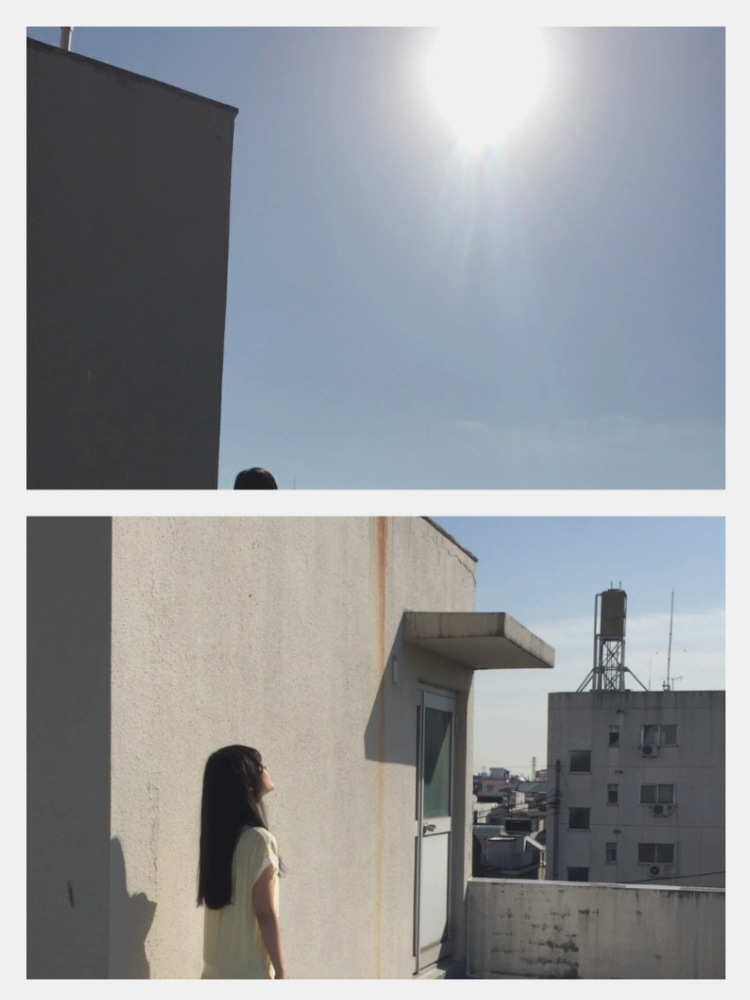
でも、あまり太陽とか
眩しいの
明るいの得意ではありません。
どちらかと言いますと
夕方とか日が落ちてきてからの方が落ち着きます。
おはようございます
こんにちは
こんばんは
らんぜの勢い
止まらんぜーーーーー
寺田蘭世です
宜しくお願い致します（´-`）
皆ー写真撮るよー
はいチーズ
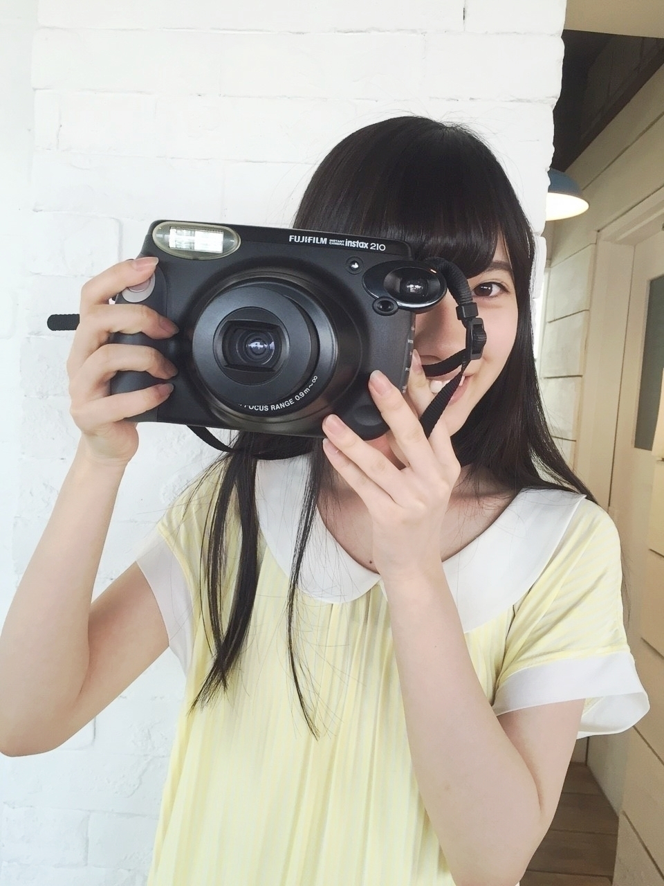
カシャリ
お返事●
●眼球フェチってなに？目が好きってことかな？
▶そうですね
眼球です
絶対皆違うし
色とか白目と黒目の比率とかそういうのを見るのが好きなんです！
●暑いのか寒いのかわからん天気やね
▶やねー
お昼は暖かいけど
早朝とか夕方は冷えるよね
体調管理っ！
●今年、大学受験がんばるね！！！
その間もらんぜのことは応援してるからー！
終わるまで待ってて！笑
▶頑張って下さい
応援してます（´-`）
待ってるよ
いい結果も聞かせてね
●赤のお洋服買おうかな〜。蘭世の影響を受けて最近ずっと思ってるの
▶すごく嬉しいです
赤はいがいに使いやすいよ！
赤い靴とか凄く可愛いし
お洋服がカジュアル過ぎたら赤入れるだけで明るくなるし（´-`）
オススメです、、、
お試しあれ
●同い年のらんぜちゃんが頑張ってるところを見るとわたしももっと頑張ろうと思えます！
お互いがんばろうねー（＾Ｏ＾）☆
▶同い年
頑張ろうね！
●蘭世って自転車乗れないんだね ^ ^
▶はい
乗らなくても生きていけるなーっと思ったので
公園に行く事も無かったですし
あと、移動は車が好きなので
でも、最近になって
サイクリング？してみたい
風を切るって楽しそうだなっと自転車に興味が湧いてきてます✨
誰か教えて欲しい
●はじめての個握楽しかったよ
5月にまた行くねー
アルバムもとったし
早く蘭世に会いたいよー笑
▶この前来てくれたんですね
ありがとう✨
私も皆さんに早く会いたい
です
また会えたら会おうね
楽しみに待ってます（´-`）
そして、まあやさん
お誕生日おめでとうございます✨
当日にご連絡したら
まあやさんから可愛いお返事が返ってきたよ
皆には具体的な文はなんとなくヒミツにしておこう（´-`）
我はまあやさんの公式妹だよ。
そして、設楽さん
欅坂46の菜々香ちゃん
みんな同じ日✨
ちと、遅くなりますが
お誕生日おめでとうございます
同じ日
私と同じ日生まれの人いるかな？
9月23日ですちなみに
そういえばイジリーさんが同じ日だよね嬉しい（´-`）✨
アンダーライブ●
コメント欄で
アンダーライブのレポしてくれた人ありがとう！
ぜひ、まだレポしてない方やしたりない方が居たら
テラダのコメント欄にて
山形の千秋楽を見学してました！
凄くいい経験になりました
次のライブが楽しみ、、、
楽しみ過ぎる
メンバーのみんな
スタッフさん
お疲れ様でした
そして、ファンの皆さん
ありがとう！
寺田蘭世タオルとか
グッズ持ってる方がちらほら
申し訳ございません（´-`）
でも、すごく嬉しかった
ありがとね!
ちゃんとみてましたよ！
撮影：みりあたん
みりあ色々ありがとう！
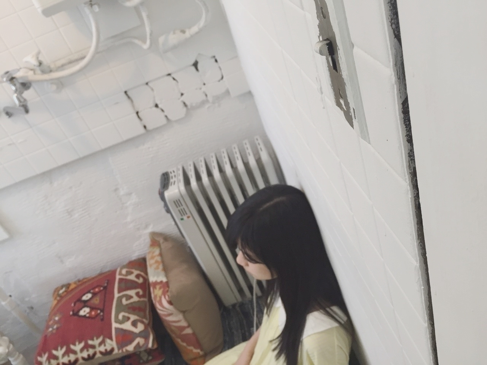
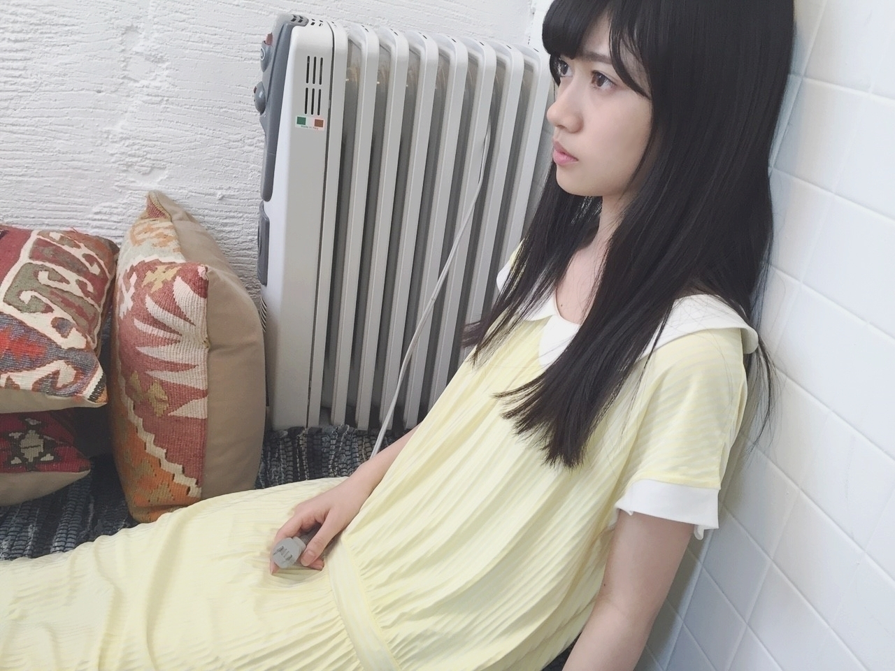
ではっ
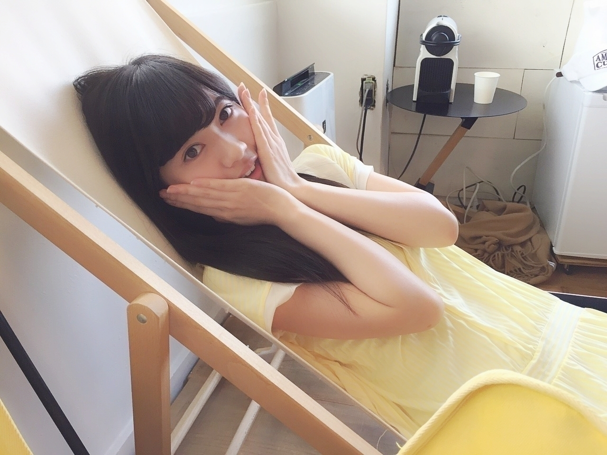
すやすや ... zzZ
おやすみなさい
2016/0422Fri言ったみたい
おはようございます
こんにちは
こんばんは
寺田蘭世です
身長約155cm~156cm
靴のサイズ22,5cm
眼球フェチです
宜しくお願い致します✨
カメラアプリの凄さに
ちと、遅いのですが
気づいて最近ハマって
あれも面白いこれも面白い
って止まらないのです
そして、長押しすると動画になってしまうって事を
知りました
動画撮っても755やっていないので
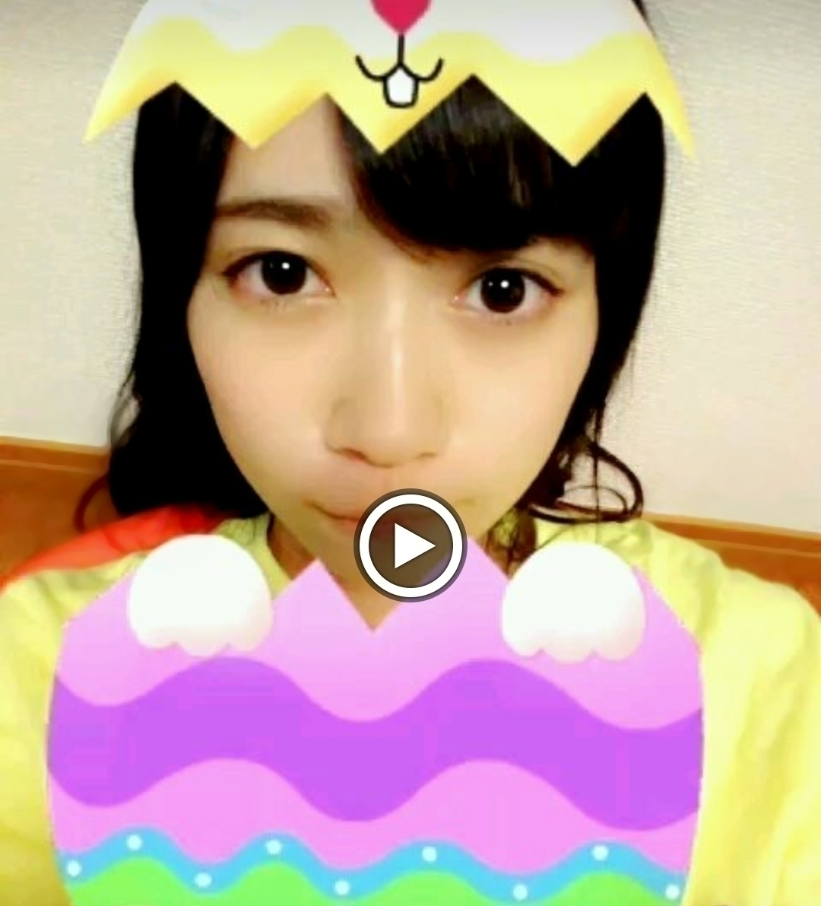
こうなった
▶マークが付いてしまった
この後どうなったかは
ご想像にお任せいたします( ˙v˙ )
個別握手会
ありがとうございました
人生初の4部制は
とても楽しい時間でした( ´-`)
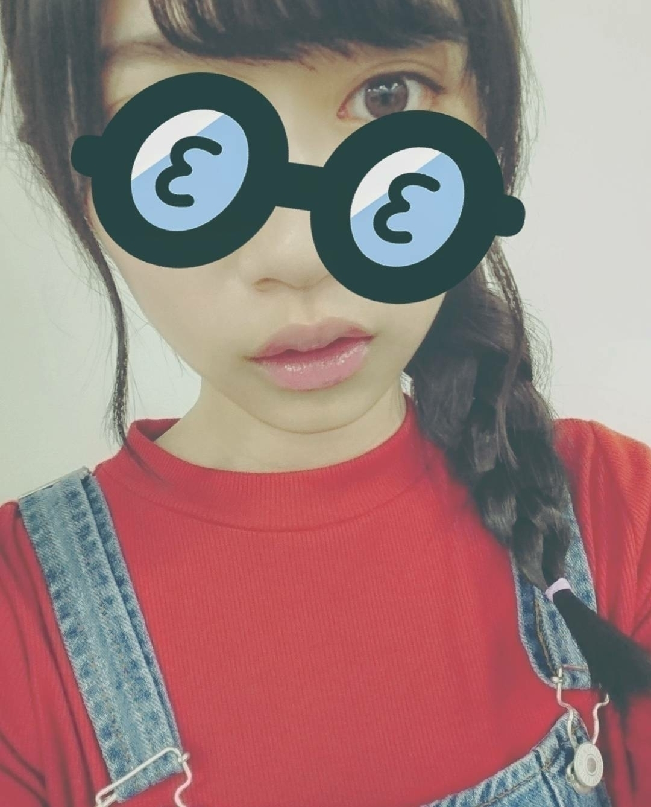
1部、2部
朝なのでラフな感じで
ゆるーっとカジュアルなお洋服を着てました
全身撮り忘れた
1部はサイド三つ編み
2部はくるりんぱヘアー
3部、4部
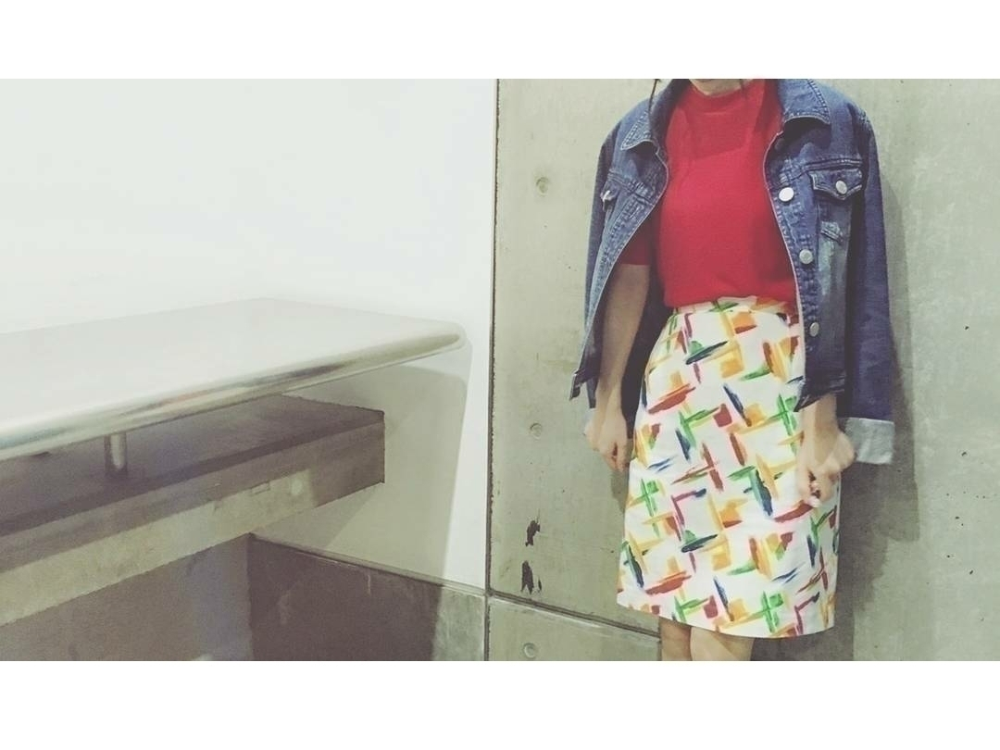
古着屋さんで買ったスカートにチェンジ
赤いトップスは着回しです
赤は何色にも似合うから
いいですねー
赤大好き( ´-`)
そして、スカートお気に入り
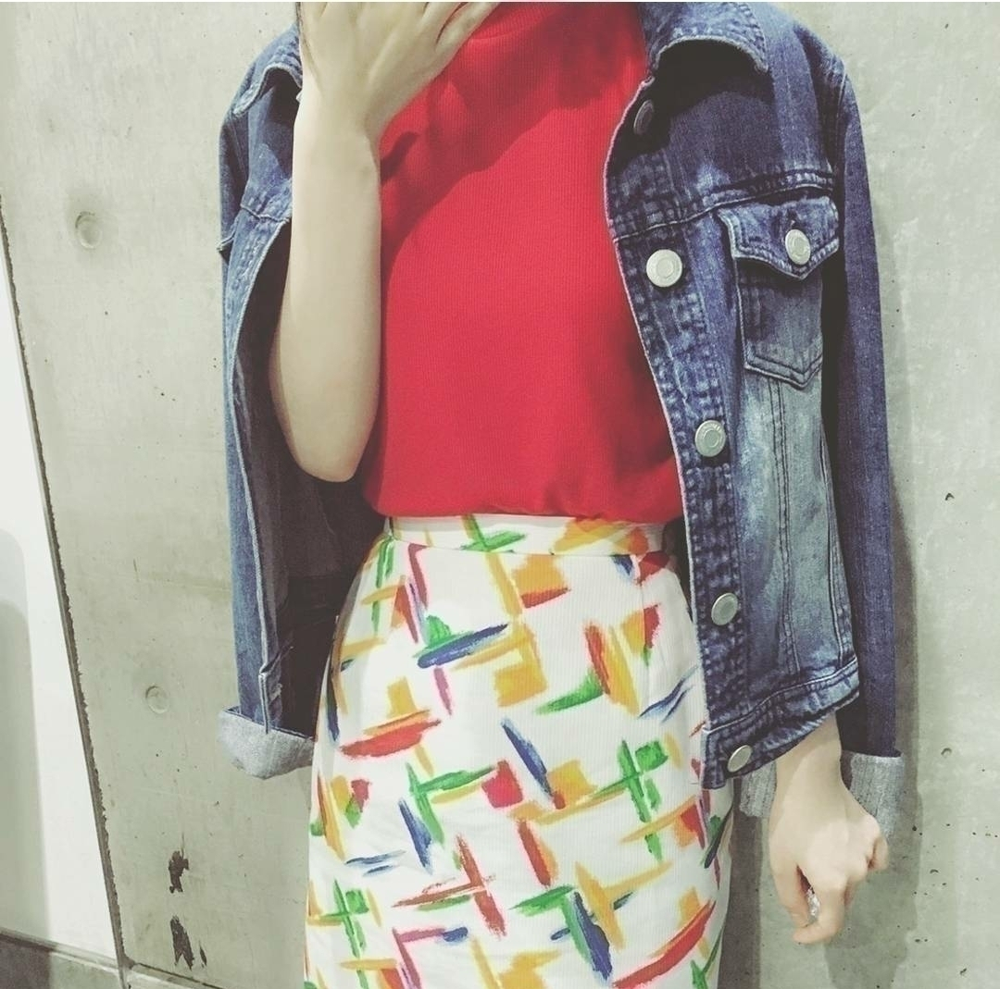
髪型は
3部、4部ともにポニーテール
4部はイヤリングを付けてみました！
握手会でイヤリング付けたの初めてかも！
好評で何よりでした！
4部制という事で
少しずつお洋服や髪型など
変えてみました( ´-`)
何より、楽しかったし
今までは1部だけとかで
時間的に来れなかった方も
4部なら来れるよーって方も多く
そして何より
ここまで一緒に歩いてきてくれてありがとうの気持ちでいっぱいです。
列が途切れて
誰も居なくて
1人で寂しく待っていたときもありました
もちろん、1部だけのときもありました
何回も心細くて折れそうになりました
隣のレーンは楽しそう
隣のレーンに並んでる方に手を振って、、、
嬉しかったけど
なんか悔しかったし
虚しかった
まだまだ上を目指したいし伸びしろはある
けど、まずは
本当にここまで一緒に
一喜一憂してくれた
ファンの皆様に感謝です
心の底から
ありがとう！
まだまだこれからです
らんぜの勢い止まらんぜ
このキャッチフレーズに恥じぬくらいになりたい
なります。
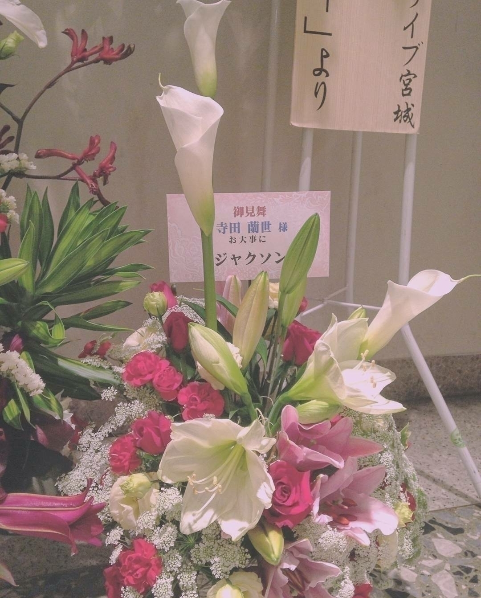
ありがとう
アイドルやらせてもらってて
良かったと心の底から思います。
2016/0418Mon⊿
お疲れ様です
寺田蘭世です
今回公式で発表されましたが
アンダーライブを欠席させて頂きます。
捻挫したのは
名古屋のアンダーライブの最終公演の最後の最後での事でした、、、
ちょうど、1ヶ月程前です
今は順調に回復してます
東北ツアーの
リハーサル期間に間に合わず
それと、1番の理由は
今後、真夏の全国ツアーアンダーツアーや
その他のお仕事の事を考えた時
今回はスタッフさん方と話し合った結果
治療に専念っという事で
今回欠席させて頂きます。
前のブログにも書いたのですが
お仕事を欠席した事がなかったので
どうしていいのかわかりません
気持ちの整理がつきません。
欠席を決める際は
泣きました。
研究生時代出たくても出れなかったアンダーライブのステージ
だからこそ、出れる事の有り難さを感じていて
大変な事もあります
でも、それも本番になれば
楽しいって事も知っているアンダーライブは
成長できる場所
アンダーライブを欠席するって今の私には凄く怖かった
握手会の際も
まだ欠席だと公式的に発表してなかった為
皆さんの
「アンダーライブ凄く楽しみ」
「蘭世のタオル、うちわ、持ってくね」
「何列目に居るから探してね」
皆さんのお言葉にどう返していいか
嘘を沢山ついてしまったような罪悪感にすごく襲われました
昨日、一昨日も
「楽しんできてね」としか言えなかった、、、
楽しみにして下さっていた皆さん
本当に申し訳ありません。
でも、ここで下を向いてても意味はありません
勿体無いと思いました。
なので、前回全国握手会のライブを欠席すると
発表したときのブログにも書きましたが
今の私にも出来ること
そして、価値観を変える
もっと色んな物に目を向ける期間にしたいです。
むしろこれを機に
いい方向に変われればなっと私は思っております。
昨日、親に頼んで
足首を鍛える道具を買ってもらいました！
ウォーキングも始めてみたいなって思ってます！
握手会やコメントで
早く治してねの言葉に
凄く励まされました！
ありがとうございます！
気持ちは元気です！
今回は
アンダーライブに出る
メンバーの皆には
頑張れしか言えなくてもどかしい
ファンの皆さんにも
楽しんできてくださいしか言えないけど
アンダーライブは
どこでやっても
どんな形であっても
やっぱりいいなーって
思って欲しいです
あの、一体感を東北でも
感じて欲しいです
すみません(T_T)
こんな事しか言えませんが
メンバーやスタッフさん
はじめアンダーライブに
関わるすべての皆様の
安全を祈ります
私が言うのもあれですが、、、笑
安全第一で！！
行く方は
全力で楽しんで下さい！！！！！！！！！！！！！！！！！！！！！！！！！！！！！！！！！！！！！！！！！！！！！！
寺田 蘭世
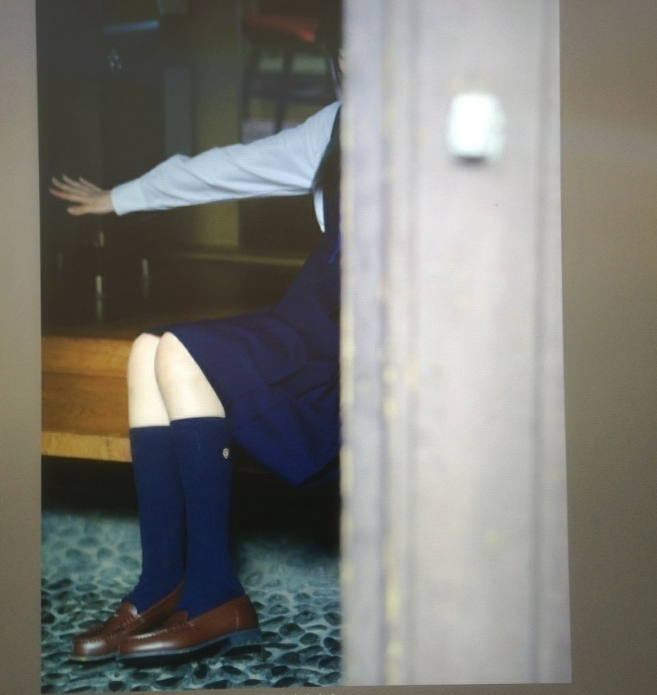
2016/0417Sun▶START
おはようございます
こんにちは
こんばんはです
最近更新したブログのコメントの中で
ランダムでコメント返ししてみました( ´-`)
良かったら最後までお付き合い下さいな
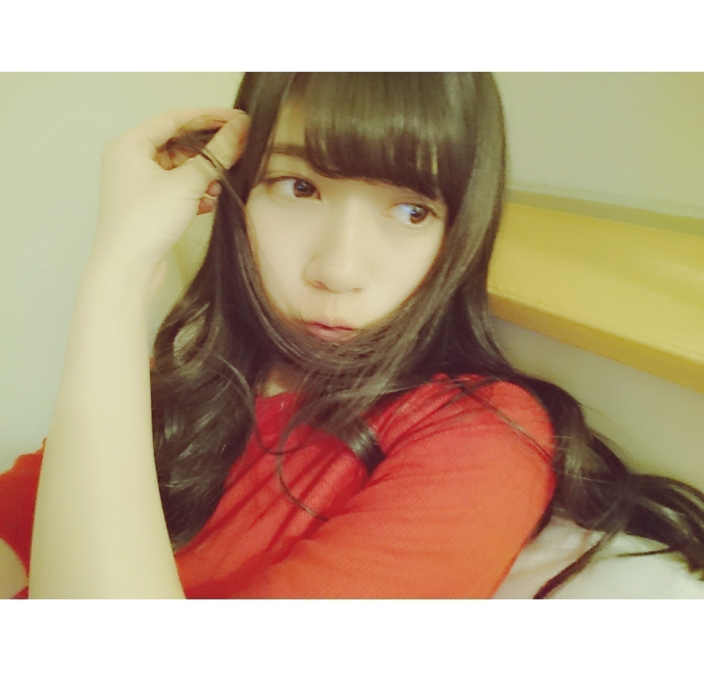
（好きな色：赤、白、黒、ピンクの順）
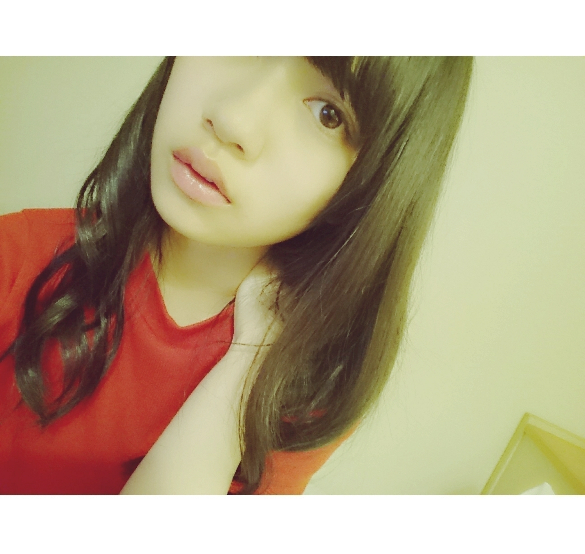
では、STARTです。
ボディーソープの件、面白かったよ！
▶ブログに書くか
迷ったのですが書きますね
ネットで下調べしていて
ずっと欲しかったボディークリームがあったんですよ
私、通販で買わない派の人で
お店に行ってようやく買えたーってなって
次の日の朝
お仕事行く前に塗ってみよーって足やら腕に塗ったら
ぬちょーーって
全然伸びなくて
凄い濃厚なボディークリームやなっと思ったら
泡が、、、
ボディークリームではなく間違えて
ボディーソープ買ってました( ´-`)
朝早くにこんなハプニングが起きたものですから
心臓に悪かったな、、、
飛び上がったもん( ´-`)
これが私のポンコツエピソードでした。
ラジオはすごく楽しかったです
ラジオって聴いてて安心するし最近、改めてラジオっていいなって思ってます。
●初めてのコメント失礼しますm(_ _)m昨年からじわじわと気になってきていて今ではすっかり蘭世推しになりました。14thの握手会には行けないけど15thは会いに行くねー！楽しみにしてます。
▶はじめまして
凄く嬉しいです
待ってます( ´-`)わくわく
●モバメで言ってた通り！
ブログ更新ありがとう♡
モバメとることができて良かった！！
これが今の気持ちです笑
あ、そうそう
seventeenみたよ～
もうそこのページだけでも10回は見たってくらい笑
アイドル雑誌だけじゃなくて
こういう女の子にとって身近なファッション誌にでれることって
本当にすこいな...って思いました（´-`）.｡oO
ばっちり友達にも宣伝してきた！笑
▶モバメ
モバメ大好きなんだ
また、50通はやり過ぎたと思っておりますが
またいっぱいメールしたいなとは思っております！
Seventeenさん
そうなんです
スクールバッグの中身という事で
普段お仕事の時にも持っていく私物が載ってます
こういった企画初めてだったからなんかワクワクしました( ´-`)
いつも読んでいる雑誌だからそれに自分が載ってるのは不思議でもあり
すごく嬉しかったな( ´-`)！
あら、お友達に宣伝
ありがとう！
●スーモ
蘭世の表情がたまらなく良かった。
▶ありがとうございます
冷たくお願いしますとの事だったので
全力で冷たい視線を送ってました、、、( ´-`)
●ほい！
ブログ更新ありがとう！！
コメント増えてて良かったねー！
微力ながら貢献出来たことが嬉すです
あまり長続きしないんだよねーこーゆーの笑
でも蘭世が喜んでくれるならってコメントたまにしてまーす
▶いつも有難く読ませて頂いております。
続けようって強く思うとプレッシャーで長続きしないと思います何事も
なので、私のブログのコメントは気軽に
今日の朝ごはんはパンにしたよとか
天気いいねーとか
本当にそういうコメントでも見てる側としては楽しいです
ホント気軽にして下さい( ´-`)
●ランゼも缶詰の缶開けられないでしょ？
▶何でわかるんですか
開けられないに決まってます。どや
●お仕事お疲れ様です！
カドカワに載ってたあらかわ遊園今度行ってくる！
京都からの遠征になるけどバスラ行くからそのついでに寄ってみる！
あつき
▶お疲れ様です
撮影で使った場所巡り楽しそう
ぜひ、あらかわ遊園行ってみて下さい
感想待ってるね( ´-`)
●僕も洋服すきで今日古着屋さんに行ってきましたー( ´ｰ`)
たくさん買っちゃった笑
▶古着好きなんですか？！
わー
いつかご一緒したいです
古着好きのお友達が欲しい
私もたくさん買いたいよ( ´-`)とほほ
●LARMEのイメージにめちゃくちゃ合ってると思いました。
白タイツが似合っていて握手会でも見てみたいです。
▶コメントありがとうございます
凄く嬉しいですありがとうございます
ありがとうありがとうありがとうございます
確かに！
ナイスグッドアイディア
今度白タイツを履いてみようかな
●蘭世ちゃん 可愛い ( ; _ ; )/~~~♡
seventeen 買って来ます ！！
わたし 野球好きなので
蘭世ちゃんが野球関係のお仕事してたり
ユニフォーム姿の写真 載せてくれたりするのが
めっちゃ嬉しいです（ ; ; ）♡
ユニフォーム姿も似合ってて最高です ⤴
蘭世ちゃん 宝塚詳しいさすがです 、、
わたしも調べてみようかな（＾Ｏ＾）
▶コメントありがとうございます
野球野球
女の子ならマドンナJAPANもぜひ( ´-`)
ユニフォームね
JAPANって書いてある
ピンクのデザインのが私自身も凄くお気に入りです
似合ってるって言ってもらえるの嬉しいな( ´-`)
宝塚もよかったら、、、✨
●大学で日本語を専攻していますけど今週に仲がいい人や家族にはこんばんは~とかこんにちはを言えないんですって言ってました
びっくりしました。。。。
日本語は楽しいですね ( ´-`)
日本もすごく好きです
newsがとまらんぜ
毎週読んでいますけど
日本も桜満開ですね！ すごい！
韓国もさくらすごいですよ！
雨のせいで今があんまりないんですけど
▶日本語って確かに難しいかもですね
漢字
ひらがな
カタカナ
とか敬語とかその場によって同じ単語なのに言い方が違うし
なのに、雨と飴とか
NEWSとまらんぜ
ありがとう！
こうやって、海外の方にも見てもらえるのって凄いことだよね
インターネットの凄さ
●らんらん◎こんばんは！
LARME読みましたよ～～～○
オフショットありがとう！！わたしは、LARMEみたいなフワフワ系着れないけど、読むのが楽しくて毎回買ってるかららんぜちゃんが出てくれてとってもうれしい(*^^*)
そんなわたしにも参考になったコーデあるよ！コンバースのところ！！フワフワ系だけど、カジュアルで可愛かった！！らんぜちゃんは細すぎるけど、身長が同じくらいだから真似しやすいんだー！笑
▶コンバース私もピンク持っているので
今回のはすごく参考になりました
雑誌ってだから楽しいよね( ´-`)
身長ね！
私も最近測ってないから伸びたかもだし縮んだ可能性もあるけど一応、156cmくらいなのです
●最近結構な頻度でブログが更新されてて嬉しいです！
あんまりコメントできなくてごめんなさい...
よくモバメでもコメント読むの楽しい！って
言ってくれてるから、なるべくしたいなと
思ってるんだけど読んで満足しちゃったり
文章がまとまらなくて結局後回しにしちゃったり...
まあ正直わたしなんかがコメントしなくても
たくさんファンのひといるから大丈夫だよなあ
いらないよなあって思うこともありました（笑）
▶ブログ楽しいんです
コメントもモバメではよく言うのですが
こんな私に沢山嬉しいお言葉をかけてくれたり
自分の知らない事が知れるから読んでいてワクワクするんです( ´-`)
でも、私もブログ書いたのにまとまらなかったり
なんかアップするのに躊躇してその期間が長くて結局投稿せず、、、みたいなことあります
だから、何となくお気持ちはわかります
でも、沢山コメントしてくれる方がいるからと
おっしゃいましたが
そういうのは関係ないと思います( ´-`)
どんなに多くてもどんなにたくさんの人が居ても
貴方の意見は貴方しかできないものだから
1人でも多くの方の
お話聞きたいなーってテラダは思います！！！！
だから、気軽にしてください！
コメントありがとう！
●蘭世は裸眼？？
▶裸眼だよ目は凄くいいと思います、、、
1.5~2です多分
むむっ( ˙-˙ )
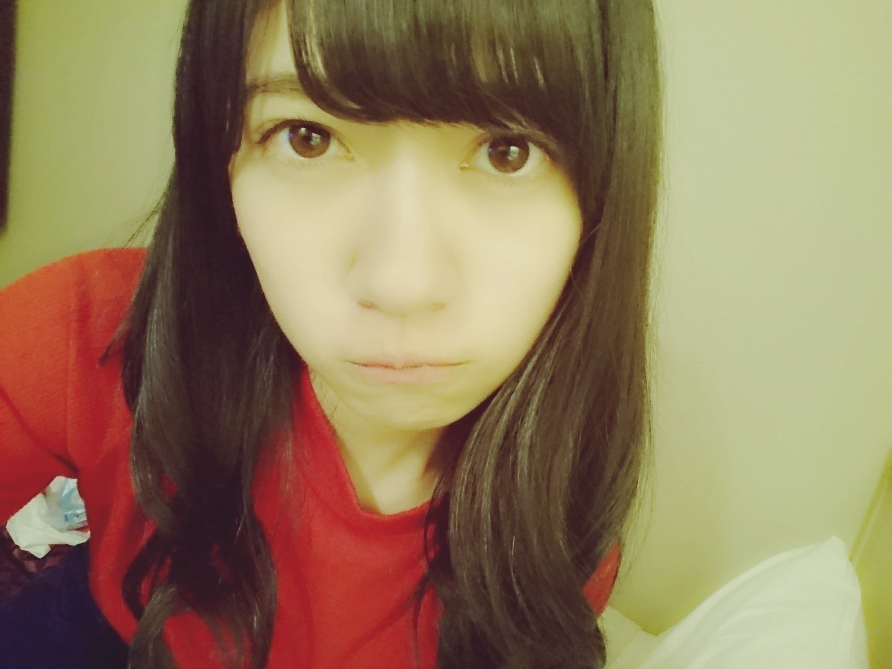
追加お知らせです( ´-`)
乃木坂46公式サイトで
スケジュール
メンバー寺田蘭世て押すと
発売日とか細かく出るのですが
これすごく便利なので
チェック宜しくお願い致します✨
4月15日発売の
EX大衆さんにソログラビアで出させて頂きました
スケジュールに書いてなかったのでこの場で告知いたします！
宜しくお願い致します
オフショット沢山あるから
またしばらくしたら
載せますね( ´-`)
全国握手会
ポスター
14枚目全国握手会でしか
手に入らないとか言われちゃうと欲しい
全国握手会会場で交換できるらしいです！
気になる木
私も欲しいな
今度並んで交換してもらおうかな、、、
握手会楽しかったです
握手会なんか久々な気がしました
直接会うっていいですね
改めて実感しました！
ありがとうございます！
本日は個別握手会です
人生初の4部制です
不安もありますし楽しみでもありドキドキしています( ´-`)
1、2部はちと早めですが
お気をつけてお越し下さい
待っております( ´-`)
最終オーディションのとき
アイドルはキラキラしてて
その姿をみて頂き
『元気を貰えた』
『笑顔になれた』
そういう存在になりたいっと言いました
今、それが出来てるのかな
では、またね( ´-`)
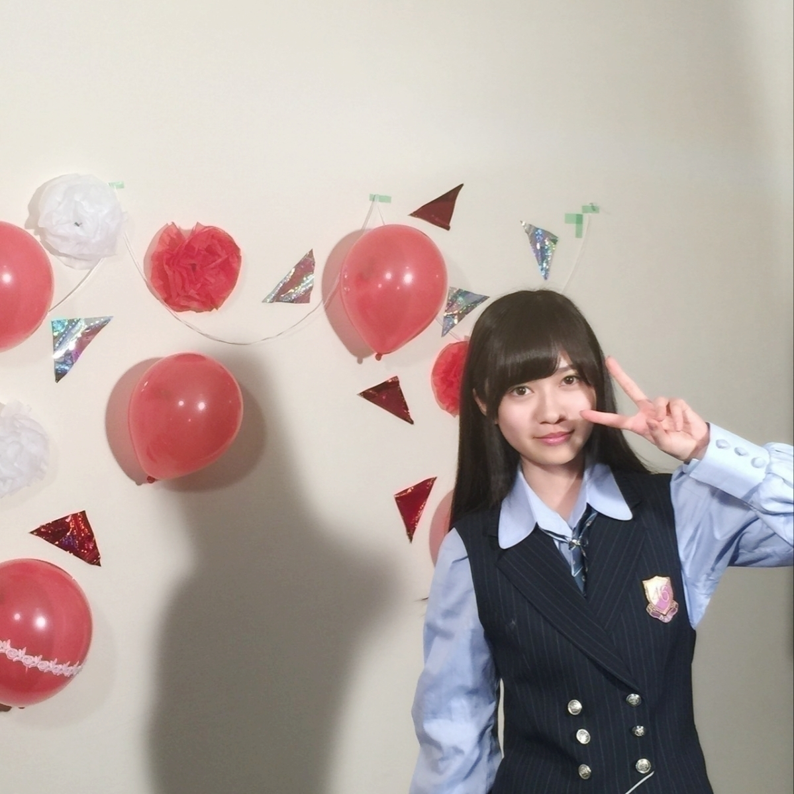
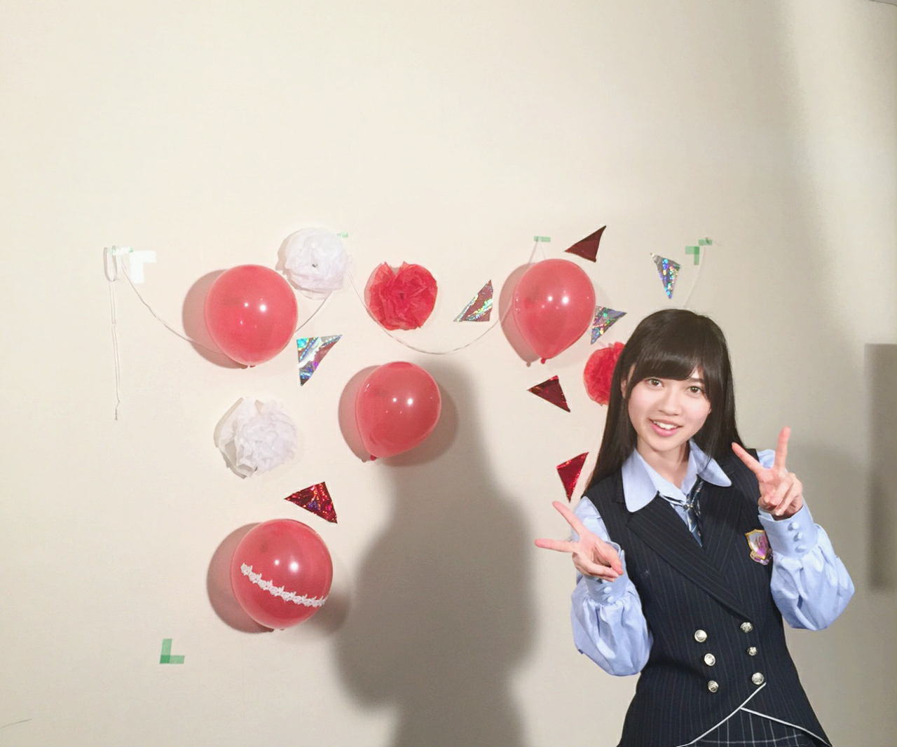
世界中へピース。
2016/0415Fri寺田蘭世です。
お疲れ様です
公式で出てますが
全国握手会のライブは
怪我（捻挫）のため欠席致します。
捻挫のせいで今日まで色々なお仕事を欠席せざるおえなかったのが
凄くつらいです。
今まで学業とか
家族の用事とか
何もかも置いて
1番を乃木坂46にしてたので
欠席です
って言葉が凄く重いです
だからといっても
どうすればいいのか
どうしようもない事なのですが
とても、もどかしいです。
でも、今の期間を無駄にする事なく
今までずっと出ていたものを1回外から客観的にとらえられるチャンスとして
考えます。
でも本当にこの期間は
物の価値観とかを変えれる期間にしたいと思っています。
いい意味で
でも、握手会はあります！
楽しみましょう！
みんな同じ空間にいます！
そう考えたら気持ちがましになる！
発表されてからすぐ
皆さんがくれたコメントを読んで元気貰いました！
テラダ頑張るぞ！
走りたい( ´-`)
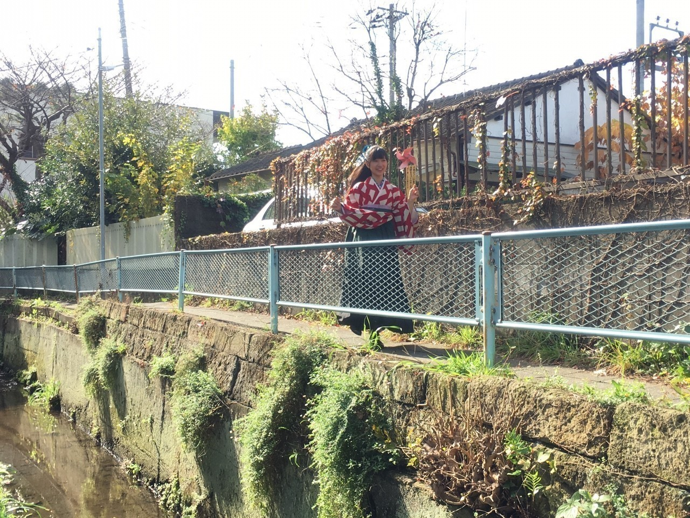
飛びたい
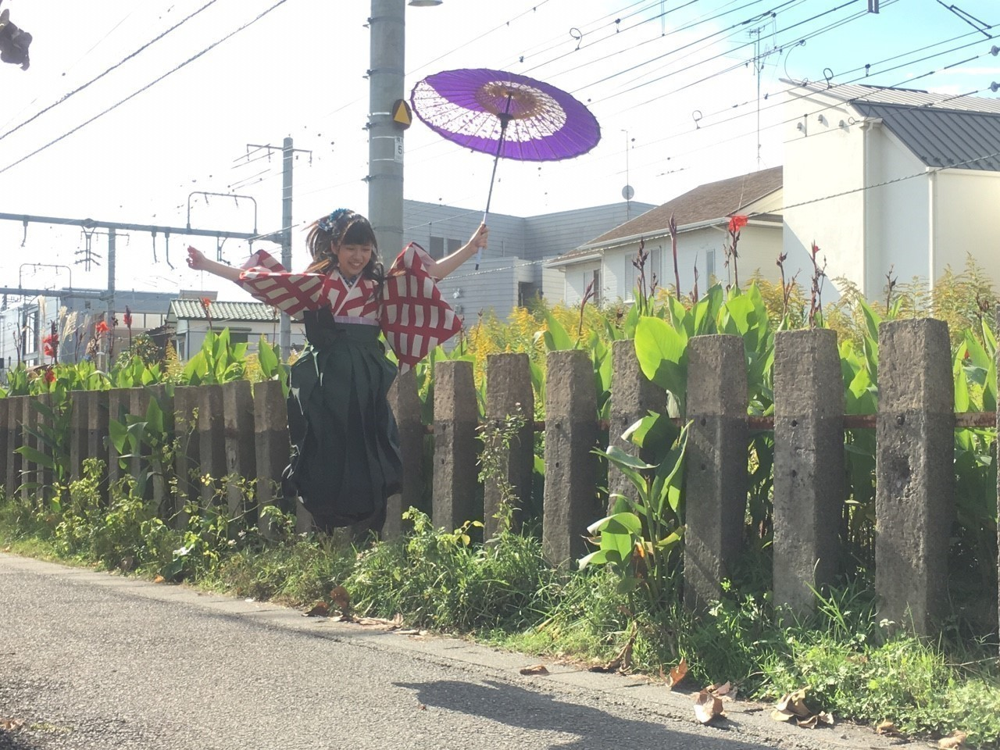
着地
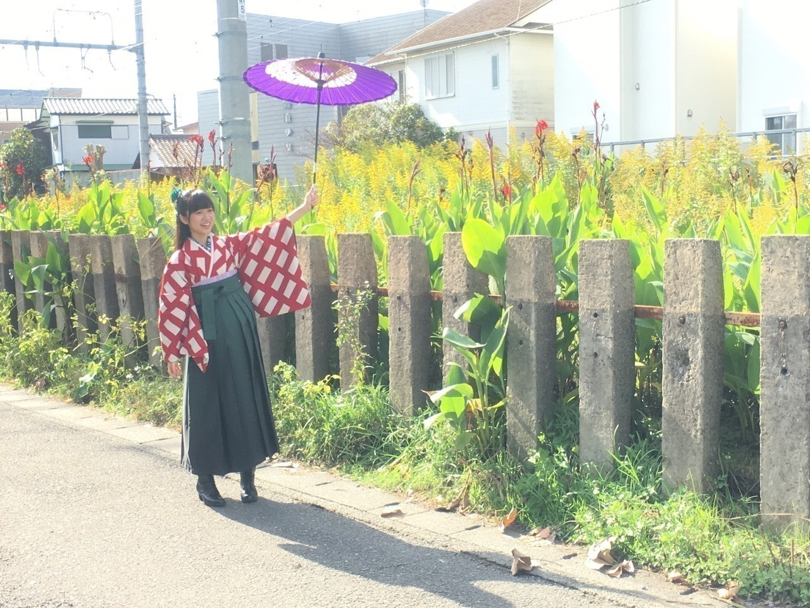
ほい( ´-`)
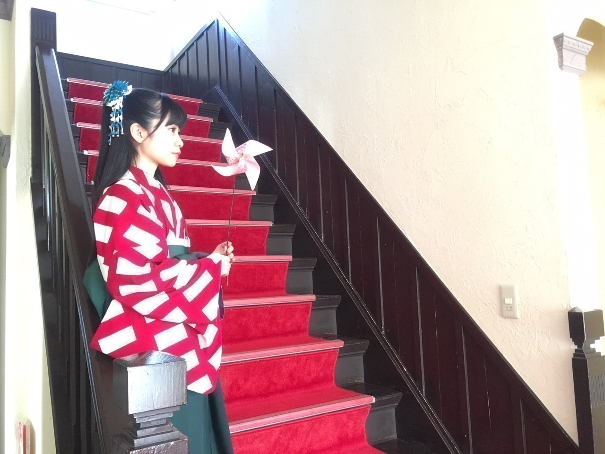
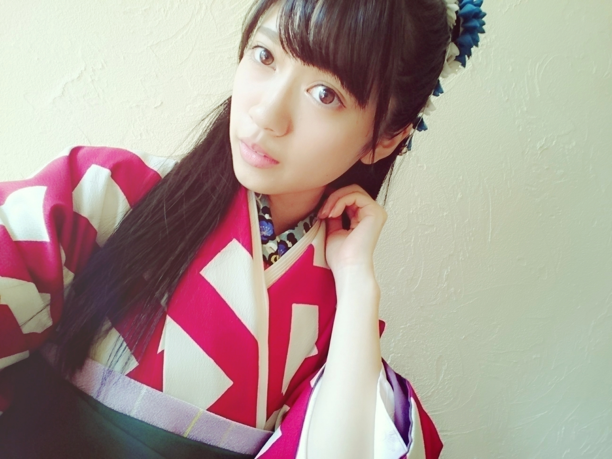
昨日の地震心配です。
特に九州地方の方
私もおじいちゃんが九州地方なので
電話しました、、、
余震も多いと思いますが
引き続きお気をつけてください
寺田蘭世